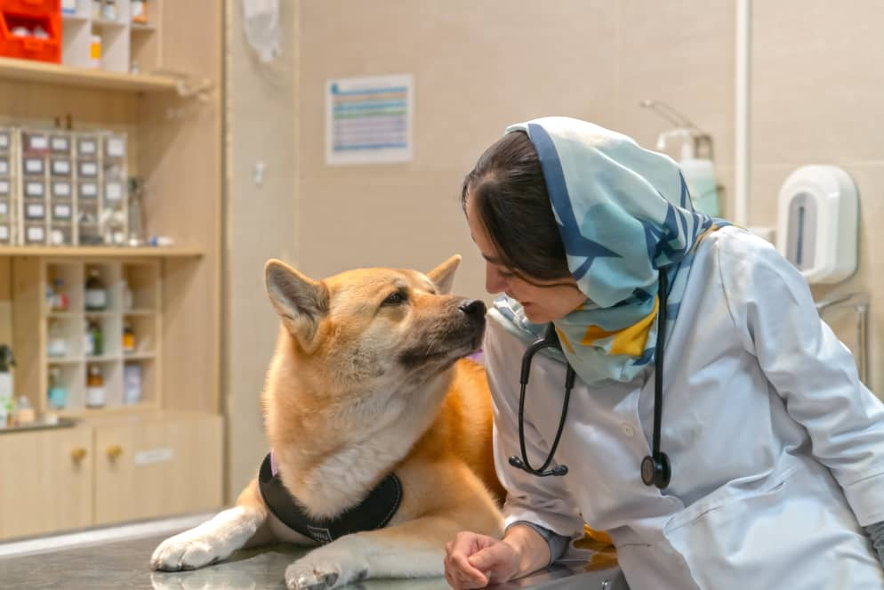
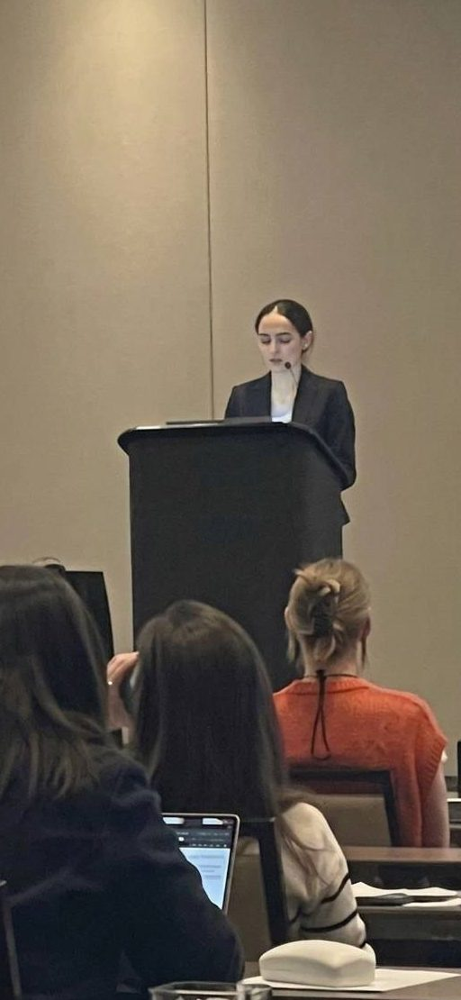

دکتر مانلی انصاری مود
متخصص داخلی دام کوچک — ویزیت حضوری در مطب و مشاورهٔ آنلاین.
بیوگرافی
اینجانب مانلی انصاری مود، دانشآموختهٔ ورودی سال ۱۳۸۳ دکترای عمومی دانشگاه فردوسی مشهد هستم. در سال ۱۳۸۹ با معدل ۱۷٫۵۷ فارغالتحصیل شدم و همان سال تحصیلات خود را در مقطع دکترای تخصصی داخلی دام کوچک در دانشگاه آزاد اسلامی واحد علوم و تحقیقات آغاز کردم. در اردیبهشتماه ۱۳۹۲ موفق به کسب رتبه اول در امتحان جامع (بورد تخصصی) شدم و در سال ۱۳۹۴ با معدل ۱۹٫۱۶ از این مقطع فارغالتحصیل گردیدم.
از سال ۱۳۹۰ فعالیتهای بالینی خود را در بخشهای مختلف دام کوچک در تهران آغاز کردم. همچنین در طول این سالها علاوه بر کار بالینی، در حوزهٔ علمی نیز فعال بودهام و با شرکت در کنگرههای مختلف دامپزشکی و ارائه و چاپ مقالات علمی، سهمی در این زمینه داشتهام. یکی از حوزههایی که در آن کار میکنم درمان FIP با GS-441524 است که تا امروز بیش از ۸۰۰ گربه را در بر گرفته.

از دانشکده تا بورد تخصصی
جاهایی که پشت میز معاینه بودهام
مقالهها و پژوهشهایم
گزیدهای از مقالات منتشرشده در مجلات بینالمللی دامپزشکی؛ همهٔ آنها و استنادها در ResearchGate و Google Scholar قابل مشاهده است.
حوزههای پژوهشی
- FIP و درمان با GS-441524
- چشمپزشکی دامپزشکیفشار داخل چشم، تولید اشک، میکروفلور ملتحمه
- دامهای اگزوتیکهمستر، خوکچه، لاکپشت، پرندگان، اسب ترکمن
- اختلال شناختی سگهای سالمند
- بیماریهای عفونی

پتتان نگرانتان کرده؟
برای شروع فقط چند خط دربارهٔ او بنویسید. بقیهٔ مسیر را با هم میرویم.